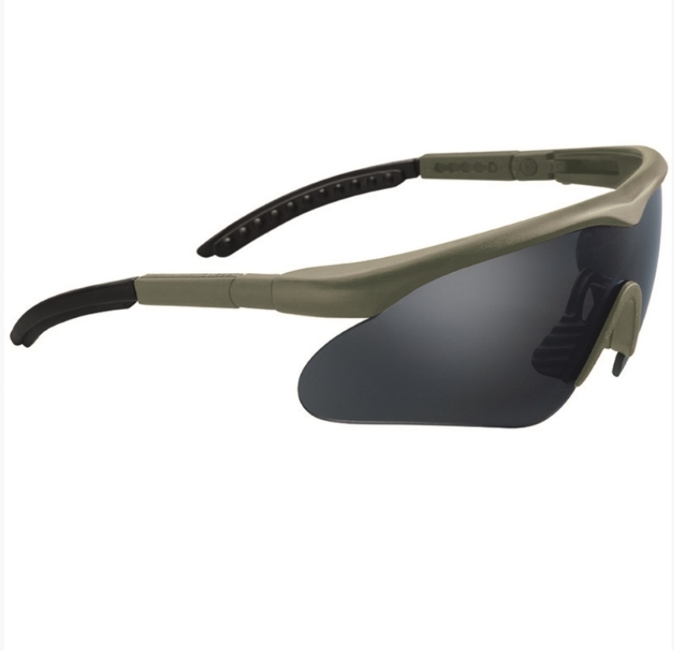

Ochelari Protectie Militari Bolle Cobra
90 Lei
Cod produs: OC001
Descriere Produs:
Legs: Polycarbonate, TPR
Lens: Polycarbonate (smoke)
Headband: 100% Nylon
Weight: 25 g
- anti-scratch and anti-fog coating
- Platinum permanent coating
- filtering UVA- and UVB-radiation (99,99)
- maximum protection againg solar radiation
- non-slip bridge
- including headband
- panorama vision
- tilting lens
- impact solid throwing 45 m/s
- extreme temperature impact
- EN 166 FT
Ochelari Fumurii Parasutisti
72 Lei
Cod produs: OC002
Descriere Produs:
Lens: 100% Polycarbonate
Ribbon: 100% Nylon
Pouch: 75% Polyester, 25% Polyamide
- close-fitting protective goggles
- elastic and adjustable ribbon
- outside antiscratch, inside antifog
- including pouch
Ochelari Pliabili Armata
15 Lei
Cod produs: OC003
Descriere Produs:
Ochelari pliabili
Ochelaru Safety Googles Bolle Ness
70 Lei
Cod produs: OC004
Descriere Produs:
Legs: Polycarbonate, TPR
Lens: Polycarbonate (smoke)
Headband: 100% Nylon
Weight: 28 g
- filtering UVA- and UVB-radiation (99,99%)
- maximum protection against solar radiation
- non-slip bridge
- including headband
- straight design legs
- panorama vision
- impact solid throwing 45 m/s
- extreme temperature impact
- EN 166 FT

Smoke Tactical Goggles Swiss Eye
110 Lei
Cod produs: OC005
Descriere Produs:
Lens: 100% Polycarbonate
- lightweight protection goggles with rubberized, ridged legs
- optimal suitable by wearing acoustic earmuffs because of the flat legs
- legs for inclination
- with antifog and antiscratch coating
- 100% UVA-, UVB- and UVC-protection up to 400 nm
- including microfiber pouch

Ochelari Black Tact. Swiss Eye Apache
260 Lei
Cod produs: OC006
Descriere Produs:
- Polycarbonate lens with antifog/antiscratch coating
- 100% UVA-, UVB- and UVC protection up to 400nm
- change glass orange and clear
- microfiber bag and case
Ochelari OD Tactical Swiss Eye Nighthawk
260 Lei
Cod produs: OC007
Descriere Produs:
Lens: 100% Polycarbonate
- lightweight protection glasses with soft legs
- optimal suitable by wearing acoustic earmuffs because of flat legs
- with antifog and antiscratch coating
- 100% UVA-, UVB- und UVC-protection up to 400 nm
- including change lences in orange and clear
- including microfiber pouch and case

OD Safety Goggles Swiss Eye Raptor
180 Lei
Cod produs: OC008
Descriere Produs:
Frame: Nylon
Lens: splinter-proof Polycarbonate
UV-protection: UV-400
- antifog/antiscratch coating
- 100% UVA-, UVB- and UVC-protection up to 400nm
- adjustable legs with front-glass-/angle of inclination adjustment
- removable clip adapter for correction glazing (optional)
- including change glass in orange and clear
- microfiber bag
X1000 Tactical Goggles Bolle
420 Lei
Cod produs: OC009
Descriere Produs:
- youngest generation of the ballistic safety goggles for military and special forces of the police
- antifog, antiscratch coating
- elastic, can be adjusted, silicone coated headband with quick release system
- transportation cover made of microfiber (usable as wipe)
- narrow frame, optimal for wearing under a helmet
- heat-resistant TPV frame
- indirect ventilation
Sports Glasses Set Ansi EN 166
155 Lei
Cod produs: OC010
Descriere Produs:
Frame: 100% Nylon
Lens: 100% Polycarbonate
Neck band: 100% Thermoplastic Polyurethane
Storage bag: 75% Polyester, 25% Polyamide
Box: EVA foam
- legs with removable neck band
- including 2 replaceable lens
- UV-protection: UV-400
- antifog/antiscratch coating
- sports glasses set in black storage case
- storage bag (recommended for glasses cleaning)
- including box

US M44 Sun, Wind and Dust Goggles with case
75 Lei
Cod produs: OC011
Descriere Produs:
Frame: 100% Thermoplastic Rubber
Lens: 100% Polycarbonate
Headband: 100% Cotton
Foam: 100% Polyurethane
Brass fastener
- protective goggles including spare glasses
- rubber frame with seal edge made of foam
- adjustable headband